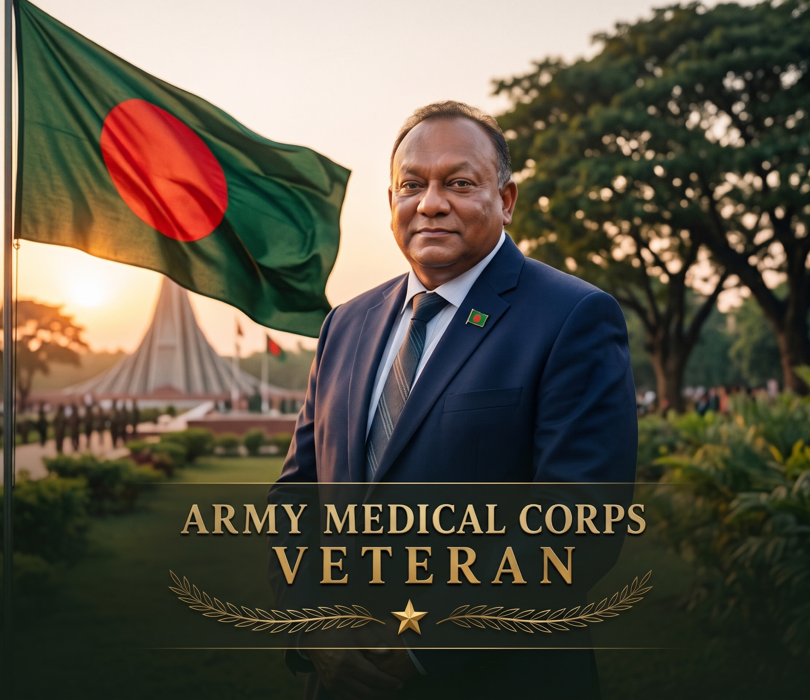

Brigadier General (Dr.)
AKM Nasir Uddin
(retd.)
Chief Executive Officer (CEO) — Pro-Active Medical College & Hospital Ltd
Years of Military & Civil Medical Command
Distinguished Institutional Appointments Held
Hospital Beds Administered Across Career
Impact Across Army, Public Health & Olympics
Where Military Precision Meets Compassionate Healing
Brigadier General (Dr.) A.K.M. Nasir Uddin (Retd.) represents a distinguished standard of healthcare leadership in South Asia—bridging the disciplined rigor of the Bangladesh Army Medical Corps with the complex operational agility demanded by the nation's premier tertiary healthcare institutions.
Across his illustrious career, he served as the Director of Dhaka Medical College Hospital (DMCH)—the central nerve center of Bangladesh's national referral system. During critical public health emergencies, including the peak waves of COVID-19 and historic Dengue outbreaks, his strategic decisiveness expanded bed capacity, secured logistics, protected thousands of medical professionals, and ensured equitable care for the vulnerable.
His career spans international service on deputation to the Kuwait Armed Forces (Ahmed Al Jaber Air Base), heading the Medical & Anti-Doping Committee of the Bangladesh Olympic Association (BOA) under WADA standards, serving as Commandant of AFMI, and commanding tertiary military and civilian hospital campuses nationwide.
Today, as CEO of Pro-Active Hospital and strategic advisor, he brings over three decades of battlefield-tested governance, financial management, and health policy stewardship to healthcare boards and medical institutions.
Crisis-Tested Governance
Proven command managing mega-hospitals and mass-casualty triage.
Institutional Transformation
Turnaround strategist for both public mega-hospitals and defense medical setups.
Bangladesh Army Medical Corps Veteran
Core Principles of Health Stewardship
"Healthcare is not merely an administrative domain; it is a sacred national covenant. True hospital leadership demands military integrity, unwavering empathy for every patient, and the visionary courage to innovate in times of unprecedented crisis."
Brig. Gen. (Dr.) AKM Nasir Uddin (retd.)
MPhil, MPH, MBBS • Bangladesh Army Veteran
Executive Career & Command Chronology
Authentic career appointments spanning over 30 years of high-command roles across Bangladesh Army, apex national healthcare institutes, and international defense deputation.
Chief Executive Officer (CEO)
Pro-Active Medical College and Hospital Ltd. • Full-time
Narayanganj (Signboard), Dhaka • On-site
Serving as Chief Executive Officer heading complete operational, clinical, and administrative functions 5 days a week. Directing 24/7 ICU/CCU, specialized surgical infrastructure, financial management, health insurance integration, and institutional governance.
National Consultant – Health Nutrition Population Program (HNPP)
BRAC • Part-time
Dhaka, Bangladesh • On-site
Provided high-level national consultancy for BRAC's flagship Health, Nutrition and Population Program (HNPP), focusing on operational planning, healthcare financing, grassroots health delivery scale-up, and institutional policy frameworks.
Chairman, Medical & Anti-Doping Committee
Bangladesh Olympic Association (BOA) • Full-time
Dhaka, Bangladesh
Headed the Medical and Anti-Doping Committee under Bangladesh Olympic Association (BOA, affiliated with International Olympic Committee). Commanded comprehensive medical support and anti-doping drives in line with the World Anti-Doping Agency (WADA) protocols for all National and International Athletes and sports in Bangladesh.
Former Commandant (as Brigadier General)
Armed Forces Medical Institute (AFMI), Bangladesh Army • Full-time
Dhaka, Bangladesh
Apex military administrative stewardship for the Armed Forces Medical Institute, overseeing training standards, HR management, and strategic medical doctrine.
Former Director (as Brigadier General)
DNCC Dedicated Covid-19 Hospital, Mohakhali (attached with MoLGRD and MoH&FW) • Full-time
Dhaka, Bangladesh
Commissioned and commanded the nation's largest dedicated pandemic hospital (1,000+ beds, 200+ ICU capacity), coordinating multi-ministerial medical logistics, critical patient intake, central oxygen distribution, and frontline medical workforce safety.
Professor, Physiology Dept (as Brigadier General)
Armed Forces Medical College (AFMC) • Full-time
Dhaka, Bangladesh
Academic professorship mentoring medical cadets in clinical and human physiology, medical pedagogy, and academic department administration.
Former Director (as Brigadier General)
Dhaka Medical College and Hospital (DMCH) • Full-time
Dhaka, Bangladesh
Commanded Bangladesh's apex 2,600+ bed referral center. Spearheaded the national COVID-19 frontline response converting Building-2 into a 600-bed isolation unit, provisioned 2,200+ healthcare workers across 30 quarantine hotels, and led clinical governance during the 2019 massive Dengue epidemic.
Former Director (as Brigadier General)
Rajshahi Medical College Hospital (RMCH) (deputation from BD Army to MoH&FW) • Full-time
Rajshahi, Bangladesh
Administered the premier healthcare hub of Northern Bangladesh, modernizing wards, emergency triage, hospital budgeting, and postgraduate residency workflows.
Former Director (as Brigadier General)
Kurmitola General Hospital (deputation from BD Army to MoH&FW) • Full-time
Dhaka, Bangladesh
Led the early operationalization and commissioning of Kurmitola General Hospital, establishing high-standard tertiary medical facilities and emergency diagnostic workflows in Dhaka North.
Former Commandant (as Brigadier General)
Armed Forces Medical Institute, Bangladesh Army • Full-time
Dhaka Cantonment, Bangladesh
Supervised military medical pedagogy, academic curriculum development, and continuous professional training of Army Medical Corps officers.
Former Commanding Officer (as Colonel)
Combined Military Hospital (CMH) - Chittagong, Bangladesh Army • Full-time
Chattogram, Bangladesh
Commanded the Combined Military Hospital in Chittagong, upholding defense healthcare readiness, specialized clinical wards, and medical services for armed forces personnel and families.
Former Commanding Officer (as Lieutenant Colonel)
18 Field Ambulance, Bangladesh Army • Full-time
Chittagong Cantonment, Bangladesh Army
Field operational medical command, tactical casualty evacuation preparedness, and troop medical logistics.
Senior Medical Officer (SMO) (as Lieutenant Colonel)
Sector Hq Khagrachari, BDR (presently BGB) under Ministry of Home Affairs • Full-time
Khagrachhari District, Chattogram Hill Tracts
Deputation from Bangladesh Army to Border Guard Bangladesh (BGB) overseeing regional border security medical readiness and hill-tract emergency triage.
2nd in Command (2iC)
10 Field Ambulance, 66 Infantry Division, Rangpur Cantonment, Bangladesh Army • Full-time
Rangpur Cantonment, Bangladesh Army
Second in command responsible for operational planning, combat medical supply lines, and field division medical preparedness.
Regimental Medical Officer (RMO)
Sylhet Cadet College, Sylhet, Bangladesh Army • Full-time
Sylhet, Bangladesh
Administered complete health, physical fitness evaluation, sanitation, and clinical care for cadets, faculty, and campus staff.
Deputy Assistant Adjutant & Quarter Master General (DAA&QMG) (as Major)
CMH Dhaka, Bangladesh Army • Full-time
Dhaka Cantonment, Bangladesh
• Responsible for maintenance of correct discipline and proper administrative functions of the largest Combined Military Hospital (1,300 beds).
• Responsible for the welfare and patient services across all specialized wards.
• Responsible for General Military Training and readiness of all troops assigned to the hospital.
Medical Officer (as Captain) – Ahmed Al Jaber Air Base
Kuwait Air Force, Kuwait Armed Forces • Full-time
Ahmadi Province, State of Kuwait 🇰🇼
Served with honor on official international deputation from the Bangladesh Army to the Kuwait Armed Forces at Ahmed Al Jaber Air Base, Kuwait Air Force. Provided aviation clinical medicine, emergency medical support, and airbase casualty response services in the post-Gulf War reconstruction era.

Dedicated Service to Nation, Defense Medicine & Public Welfare
From battlefield field ambulances and airbase clinical command in Kuwait to heading Bangladesh's largest COVID defense facilities and tertiary medical institutes.
LinkedIn Verified Skills & Strategic Expertise
Demonstrated capabilities validated over 35+ years of healthcare leadership in high-stakes civilian and military environments.
Executive Advisory & Strategic Capabilities
Providing high-level counsel to healthcare boards, investor groups, government ministries, and international health development organizations.
Hospital Commissioning & Setup
Architectural feasibility, clinical workflow planning, medical equipment procurement, and full turn-key launch of tertiary medical facilities and specialized medical colleges.
Epidemic & Crisis Governance
Battlefield-tested protocols for mass casualty triage, infectious disease isolation units, supply-chain resilience, and frontline healthcare workforce protection during emergencies.
Clinical Quality & Patient Safety
Instituting international clinical governance, NABH/JCI alignment standards, zero-tolerance medical audit regimes, infection control protocols, and empathetic patient relations.
Healthcare Turnaround Strategy
Transforming struggling hospitals into financially viable, ethically operated, high-occupancy centers of excellence through disciplined administrative reforms.
Medical Education & Residency
Curriculum design, post-graduate medical training oversight, and faculty development rooted in the apex military medical academy (AFMI) legacy.
Sports Medicine & Anti-Doping
Formulating national athlete health protocols, Olympic medical commissions, and international WADA-standard anti-doping integrity frameworks.
Major Healthcare Projects, Reforms & Bilateral Missions
Heading transformative health developments in collaboration with JICA (Japan), GIZ (Germany), Denmark (Danida), Netherlands, Sweden, USA, and the Government of Bangladesh.
Preparation of Master Plan & Design for Renovation & Modernization of Dhaka Medical College & Hospital (DMCH)
Dhaka Medical College & Hospital (estb. 1946) is the nation's premier tertiary referral hospital with 2,600 existing beds and the largest medical/nursing college campus. Under his leadership as Director, the comprehensive Master Plan, Architectural Blueprint, and Cost Estimation were formulated to build a modern 5,000-bed hospital, new medical college, and nursing college. Envisioned as perhaps the largest academic hospital in the Asia-Pacific region.
Estimated Budget
~23,000 Cr BDT
Bed Capacity
5,000 Beds
Towers Planned
5 × 20 Floors
Strategy
Zero-Downtime
* Designed with a phased demolition strategy keeping existing 2,600 hospital beds and academic classes 100% operational throughout the 6-year execution.
Asia-Pacific Scale
Largest tertiary academic complex planned in South Asia
Health Services Strengthening Project (QI) at DMCH & Capacity Building of Nursing Services (CBNS)
Jointly carried out with Directorate General of Health Services (DGHS) & JICA
Designed for healthcare Quality Improvement (QI) utilizing Japanese '5S' techniques (Sort, Set in order, Shine, Standardize, Sustain). Comprehensive Clinical Practice Nurses (CPN) training, Clinical Nurse Teacher Training, and institutional digital e-learning rollouts across DMCH.
• Core Methodology: Japanese '5S' Continuous Quality Improvement
• Workforce Empowerment: Clinical Nurse Teachers & Digital E-learning
One Stop Crisis Centre (OCC) for Women & Child Protection
Ministry of Women and Children Affairs (Supported by 11 Ministries)
Spearheaded the multi-sectoral emergency protection response for women and child victims of domestic violence and assault at DMCH and RMCH. Delivered free integrated care combining medical treatment, clinical forensic support, trauma counseling, legal aid representation, and safe rehabilitation.
• Inter-Ministerial Model: Unified support from 11 Government Ministries
• 100% Free-of-Cost Services: Clinical forensics, legal counsel, and shelter
Addressing Bangladesh's Reproductive Challenges (Maternal & Child Health)
Deutsche Gesellschaft für Internationale Zusammenarbeit (GIZ) & RMCH
Carried out under GIZ policy guidelines, technical oversight, and funding to provide critical healthcare for pregnant mothers and newborns. Strengthened institutional delivery protocols and maternal-child health safety nets across Northern Bangladesh.
• Target Focus: Safe institutional delivery & newborn survival
• Supervision: German technical guidelines & clinical governance
Sexual & Reproductive Health Rights (SRHR) Clinical Training & Services
Jointly conducted by RHSTEP & Ipas (Legacy 30-Year Healthcare Program)
Directed clinical training and client service expansion to improve reproductive health for female clients. Coordinated skill enhancement for doctors, nurses, and family health workers at Rajshahi Medical College Hospital and later scaled three-fold at Dhaka Medical College Hospital.
• Scope: Scaled to 3x volume at DMCH compared to regional centers
• Capacity: Comprehensive clinical certification for healthcare teams
Degrees, Postgraduate Research & Alma Mater
Verified academic footprint from Notre Dame College, Rajshahi University, University of Dhaka, and Bangladesh University of Professionals (BUP).
MPhil
Health care & Hospital Management
Bangladesh University of Professionals (BUP)
Advanced postgraduate scientific research, institutional health administration methodologies, and clinical governance frameworks.
MPH
Public Health Administration
University of Dhaka (ঢাকা বিশ্ববিদ্যালয়)
Public health administration, epidemiology, biostatistics, health systems economics, and national disease control policy design.
MBBS
Medicine & Surgery
Rajshahi University (রাজশাহী বিশ্ববিদ্যালয়)
Foundational clinical medicine, trauma care, general surgery rotations, and subsequent commissioning into the Bangladesh Army Medical Corps.
HSC
Science
Notre Dame College, Dhaka (নটর ডেম কলেজ)
Prestigious collegiate academic foundation in pure sciences from one of the nation's most revered academic institutions, instilling lifelong discipline.
Public Health Research & Clinical Studies
Contributed to clinical research on COVID-19 prevention protocols, community health delivery, and hospital infection mitigation.
Strategic Advisory & Direct Correspondence
For healthcare board appointments, hospital commissioning advisory, keynote invitations, or high-level health policy consultations, connect with the personal executive secretariat.
Official LinkedIn Profile
Verified executive network & career updates
linkedin.com/in/brig-gen-dr-akm-nasir-uddin →Personal Secretariat Inquiries
Formal proposals, institutional invitations & advisory briefings
secretariat@briggennasiruddin.com →Direct WhatsApp Secretariat
Prompt executive correspondence & meeting scheduling
Connect on WhatsApp →Submit Advisory / Consultation Proposal
Confidential executive correspondence channel